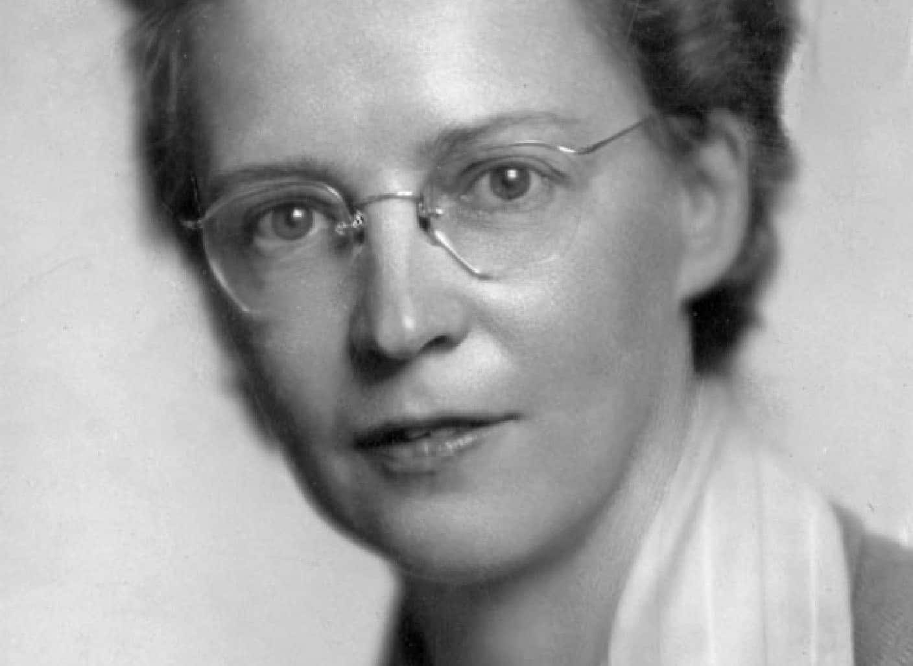

The remarkable Elizabeth “Elsie” MacGill isn’t a household name in Canada yet, but once you learn the incredible story of this aeronautical engineer whose work was vital to the Allied war effort during the Second World War who then went on to champion many of the equal rights women enjoy today, you’ll wonder why she isn’t.
When Canadians find a new $1 commemorative coin in their change honouring the Vancouver-born MacGill, they’ll see her portrait on the backdrop of a sky that highlights some of her historic engineering achievements, but if they dig a little deeper into her story they will learn how she paved the way for not only women, but for everyone in her wake.
They will learn that it wasn’t just her brilliant mind that helped her break down barriers for women, but her unconquerable spirit that proved that with hard work, determination and passion, anything is possible. Those attributes helped her not only to excel in aeronautical engineering, but also to elevate others by championing for equal rights.
But just as graduation was around the corner for her Master’s degree, she was struck by polio which paralysed her below the waist. Doctors told her she may never walk again, but after a long period of rehabilitation she did learn how to walk again, although she had to use canes for the rest of her life.

Source: Library and Archives Canada/Elsie Gregory MacGill fonds/e006611177